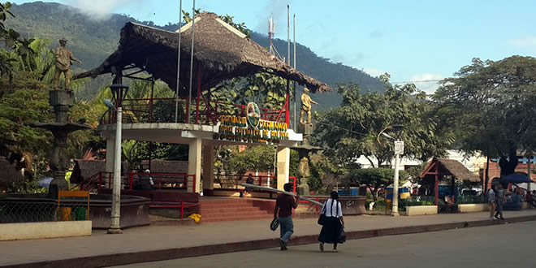
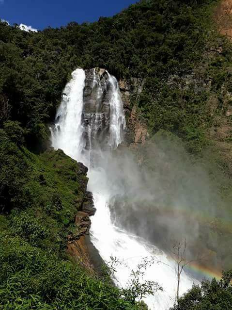
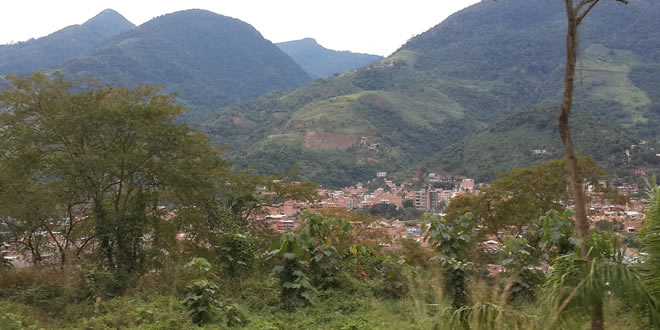

TURISMO EN CARANAVI

Caranavi es un Municipio del Departamento de La Paz, que fué creado en el año 1992, fecha en la que tuvo un crecimiento extraordinario en torno a la actividad económica
productiva, principalmente en cítricos, café y arroz, convirtiéndose en la década de 1990 en receptor de migrantes del altiplano….

Recomendaciones
Ropa liviana y un impermeable para épocas de lluvia; botiquín de Primeros Auxilios, repelente para mosquitos y protector solar.
Temperatura: Mín. 20ºC – Máx. 35ºC.
Altura: 619 m.s.n.m.
Provincia Caranavi- La Paz
Caranavi es un Municipio del Departamento de La Paz, que fué creado en el año 1992, fecha en la que tuvo un crecimiento extraordinario en torno a la actividad
económica productiva, principalmente en cítricos, café y arroz, convirtiéndose en la década de 1990 en receptor de migrantes del altiplano. Por su localización geográfica,
entre la parte andina y la amazonía, Caranavi se ha constituido en un centro distribuidor y dinamizador económico del norte paceño, aunque su influencia trasciende más allá
de ese límite y llega hasta la Ciudad de La Paz, como su mercado natural y al Beni como departamento productor de bienes agropecuarios.
Su riqueza turística está basada principalmente en sus condiciones geográficas, físicas y geomorfológicas: un clima agradable, una amplia variedad de especies vegetales,
cuencas con innumerables ríos que tienen abundante riqueza piscícola, donde se puede navegar surcando el territorio por los profundos abismos de los Yungas y las terrazas
aluviales del sub andino. Pero lo más importante del recorrido por el Municipio de Caranavi son los asentamientos humanos concentrados alrededor del centro urbano.
En el municipio también habitan varios pueblos nativos, como los Mosetenes que aún conservan su dialecto, costumbres y forma de vida ancestral, ubicados en los cantones
de Alcoche, Sararía e Inicua.
